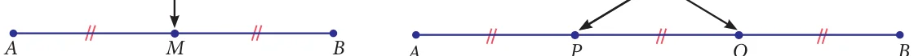
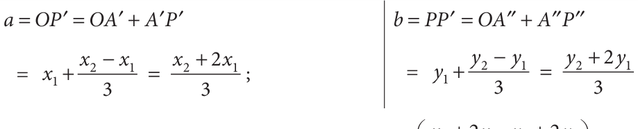
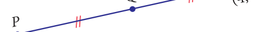

The mid-point of a line segment is the point of bisection, which means dividing into
two parts of equal length. Suppose we want to divide a line segment into three parts of equal length, we have to locate points suitably to effect a trisection of the segment.
Mid-point (bisection) Points of trisection

\(= = =\)
For a given line segment, there are two points of trisection. The method of obtaining
this is similar to that of what we did in the case of locating the point of bisection (i.e., the mid-point). Observe the given Fig. 5.31. Here P and Q are the points of trisection of the line segment AB where A is (x_{1}, y_{1}) and B is (x_{2}, y_{2}). Clearly we know that, P is the mid-point of AQ and Q is the mid-point of PB. Now consider the DACQ and \(\triangle PDB\) (Also, can be verified using similarity property of triangles which will be dealt in detail in higher classes).
A P ' ' \(= P Q\) ' ' \(= Q B\) ' '

If P is (a, b), then

Thus we get the point P as \(x +\) , +
If Q is (c, d), then

Thus the required point Q is 2 3+ , 3+ Find the points of trisection of the line segment joining ( - , - ) and ( , ).
Solution Let A( - , - ) and ( , ) are the given points.

Let P(a,b) and Q( , ) be the
points of trisection of AB, so that \(AP = PQ = QB\) .
By the formula proved above,
P is the point Progress Check \(x^{2} +32x^{1}\) , \(y^{2} +32y^{1} =\) \(4 + 23( - 2)\), \(8 + 23( -\) 1) (i) Find the coordinates of the points of trisection of the Q is the point = \(4 - 3 4\) , \(8 - 32\) \(= (0\), 2) line segment joining and ( \(- 2\), \(- 3)\) . (4, \(- 1)\) \(2x_{2} + x_{1} 2y_{2} + y_{1}\) \(2(4) - 2 2(8) - 1\) (ii) Find the coordinates of the 3 , 3 \(= =\) \(8 - 332 ,16,3 -\) 13 \(= (2\), 5) points the line segment joining the point (6, - of 9) and the origin.trisection of